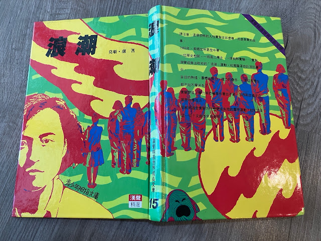

漢聲精選世界成長文學-浪潮(莫頓.盧)

漢聲精選世界成長文學-漢聲文學的書，我媽以前很愛買，不知道是是不是被推銷員洗腦的緣故，我們家就有了一套漢聲精選世界成長文學，這一套書包含許多經典作品，例如金鉛之城，不過那時我並沒有很愛讀這些書籍。直到2024年農曆年假期，我去台北老家整理出這套叢書，發現了這套叢書的價值，因此下定決心把這套叢書帶回高雄家。
這套叢書我以前有看過超級腦袋這一本書，但是當時主要是為了要交讀書報告，所以才會看那一本書。然而最近我看到浪潮這本書，覺得很有趣，因此就決定讀這一本書。
浪潮這本書主要是在講一個教授歷史的高中老師-班恩，有一天在上有關德國納粹歷史的時候，班上學生提出疑問，說為什麼當時德國境內沒有人去反抗納粹，並且在戰後這些德國人也否認參與納粹的活動，甚至急於切割。這到底是怎麼回事？班恩怎麼也想不出答案，於是班恩為了尋找答案，他就在他的課堂上做實驗。
一開始他要求學生要按照他的口令以及要求上課與回答問題，接下來要求學生呼口號，設計敬禮的手勢，當全班同學都很有紀律的完成口令，成為浪潮的一員時，班恩就用抽籤的方式指定某幾個同學來監督 其他浪潮成員。後來，班恩還設計加入浪潮的方式，要已經是浪潮的成員，必須要找一個非浪潮的成員來加入。一個看似簡單的實驗，結果卻越來越失去控制，有些成員甚至會用暴力/威脅的方式，強迫學生加入浪潮。
浪潮的成員都認為在浪潮中人人平等，殊不知浪潮正在排擠，甚至強迫其他非浪潮成員加入。另外，由於浪潮的成員犧牲自身的自由，來完成團體的目標，讓浪潮成員有一種加入浪潮就可以完成以前無法完成的偉大目標，所以會吸引更多的人（尤其是成績不是很好，或是沒有特殊光環的學生）。但是浪潮成員在不知不覺中，已經變成了納粹的樣子，而學校學生就是那時的德國民眾，不能也不敢發出反對的聲音。最後，班恩巧妙的利用浪潮學生的盲從，在大禮堂前向眾浪潮成員面前，戳破浪潮的假面，才結束了這場風暴。
浪潮的這個故事，真的給了我很大的啟發。當大家都在講德國人怎麼會縱容納粹，而指責他們失去良知，但是殊不知當你發出反對的聲音的時候，是要付出多大的代價。所以，雖然我們的社會是一個言論自由的社會，但是真的是如此嗎？還是事實是，我們只要想說出實話（反對的聲音），就要付出被酸民/側翼攻擊，甚至被肉搜/公審的代價？
延伸閱讀:
天下雜誌出版-晶片戰爭(克里斯˙米勒)[Kindle]使用Calibre+DeDRM，幫你去除亞馬遜(Amazon)電子書的DRM
另外，美國購物代運可參考:
https://a1253247.blogspot.com/p/hopshopgo-vs-spexeshop.html
對板球有興趣的可參考:
https://a1253247.blogspot.com/2022/05/cricket-line-written-by-admin-24-10.html
對生活飲食有興趣，可參考: